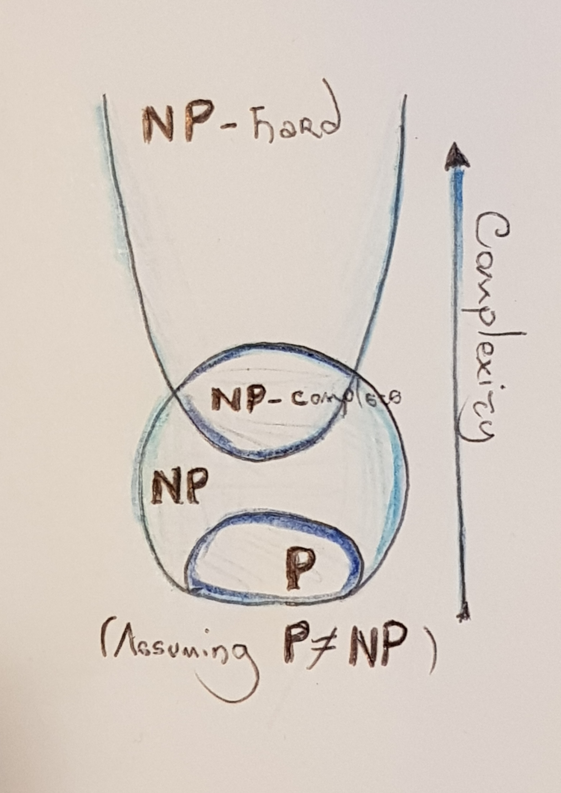
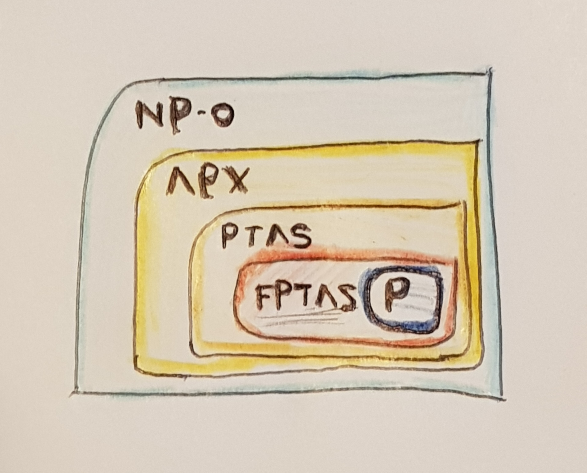

This is an extended version of a post that will be appearing somewhere soon. All the opinions expressed here are my own. Angry mail should be directed at me. Happy mail too--I'd rather receive that one.
A few weeks ago, my colleague Danny Perry and I released Bort, a highly optimized BERT-large model that is \(20\times\) faster, \(84\%\) smaller, and consistently outperforms it in \(20/23\) natural-language understanding tasks. It was a fairly complicated task, and involved a main, applied paper ("Optimal Subarchitecture Extraction for BERT"), as well as two more theoretical papers describing the algorithms used ("An Approximation Algorithm for Optimal Subarchitecture Extraction" and "An Algorithm for Learning Smaller Representations of Models With Scarce Data"). While the papers and model received an unexpected amount of attention, I think that the density behind the two more rigorous papers keeps many people from reading them. Sure, math has to be precise, and statements need to be backed with proofs (you can't go around saying "bOrT iS oPtImAl" without a proof of that!). However, the ideas are fairly intuitive without the need of a strong mathematics background. Besides, I love math, and I love computer science. I'd very much like to offer you a window into the research done to obtain Bort, eschewing some of the long-winded lemmas and proofs, but emphasizing the ideas. Indeed, I personally believe that the ideas behind this research (concretely, the algorithms I developed) are far more interesting than the places on the leaderboard or the numbers attained.
In this post I will informally introduce you to these ideas, and share some of my passion for this field. I'll mostly talk about the algorithms, but I will mention how they were applied to Bort/BERT-large. I apologize beforehand for any omissions and handwaving (which is absolutely necessary in this case), weird images (because I'm a computer scientist, not a graphic designer), and ugly formatting (because what is Jekyll anyway?). Throughout my math education, I was always taught to remember that the objects studied shared progressively deeper correspondences ("here there be dragons!"). Hopefully by the end of this read, you'll want to go forth and slay some dragons of your own.
Following the great W. A. Hodges, in this post, "I" means I, and "we" means we.
Some of y'all probably already know what a language model is, but the notion of an architectural parameter is new. I'll introduce it here by using BERT as an example, since it is the use case for the algorithms I'll talk about.
A language model is, very informally, a mapping between strings and vectors. While one could build a big matrix of all words and assign a number based on the frequency of the words appearing together for each entry, it has become clear over the past few years that a non-linear model (i.e., a neural network) works far better. Language models usually just return the embedding (vectors), and it is the downstream model's problem to make sense of them and output something for the task. As an example, imagine I want to do sentiment classification on some corpus, so my input is a single sentence and my output is happy and sad. Then a standard pipeline would have a pre-trained language model, usually trained to output good vectors with huge datasets, and then a second model--a classifier--that takes in the language model's output and returns happy/sad. The quality of the language model will directly impact the performance of the classifier, and normally you need to "specialize" (fine-tune) your language-model-and-classifier combination so that it knows what to do.
There are A LOT of things we can say about this field, but, since we are mostly talking about applying the algorithms to BERT, we'll leave it for another time. All you need to know right now is that, at the time of writing this, the most popular, successful, and--when released--best-performing language model is BERT. Let's just skip the details about how it works, and only remark two things about it:
We'll focus on parametric variants of BERT, because, as I said, BERT is a use case of the algorithms from this post. To do this, think of BERT as a function that takes in four architectural parameters: the depth, the number of attention heads, and the hidden and intermediate sizes. When you set these four architectural parameters to specific things, you get different variations on the architecture (e.g., BERT-large, BERT-base, TinyBERT, MicroBERT), etc, with interesting results.
The idea of architectural parameters is not new, but it was first introduced and applied to deep learning, to the best of my knowledge, in my paper. However, it's a bit different than your usual machine learning, as it dabbles on the frontiers of meta-learning. To gain an intuition for them, think of a single linear layer, \(f(x) = ReLU(Ax + b)\), where \(A\) is a \(m \times n\) real-valued matrix. The trainable parameters are all the (uncountably infinite) values that \(A\) can take. The architectural parameters are \(m\) and \(n\). By definition, these are non-trainable and cannot be found without meta-learning methods. However, they also form a space, since it's the set of all valid combinations of \(m\) and \(n\). This has more implications than you think, and we'll cover them one or two sections from now.
At the time of the release of the original BERT paper, the influence of specific combinations of architectural parameters on the performance of this language model was poorly understood. Nowadays, it's a bit better understood by the work of many great researchers. For our use case, we'll forgo the clever, specialized research mentioned before, and take it in a different, more primitive direction:
Can a computer tell us what is the best combination of architectural parameters, for an arbitrary model (not just BERT)?
Another thing: a general trend is that smaller models aren't always more accurate, by a small delta; but they are significantly faster. Even more so, BERT was considered underfit by its authors, and it wasn't until RoBERTa that a highly optimized version of the same architecture was found. This means that RoBERTa has the same architectural parameters as BERT-large, but is better performing because it uses a different training scheme. I greatly recommend you check out these models if you're interested, since they are both quite important for the field. I think they are taught in college NLP courses nowadays! Also, note that other non-parametric variants (i.e., alterations on the graph) work really well, like ALBERT. But our problem is different, so we'll just give credit where its due and move on.
Ok, let's forget about BERT for a moment, and get to the (more) fun stuff.
Computational complexity theory, broadly speaking, studies and categorizes problems based on how "hard" they are. The definition of hardness is very precise; but for this post we will mostly care about polynomial-time solutions to problems, which may or may not be feasible to attain. Why polynomial? Well, mostly because polynomials compose well (so calling a poly-time algorithm from another poly-time algorithm will remain poly-time), and they do not grow too fast. This last part is quite important when talking about time and space of an algorithm--and for this post, we will be only talking about time.
Think about sorting a collection of objects by trying out random permutations. Sure, if your collection of objects is \(\{A, C, B\}\), there's only \(3! = 6\) ways you can randomly arrange it. With luck, you'll be done "quickly"--or so it seems! This "algorithm" runs in a time that is a factorial function of the size of the input, \(an! + b\), where \(a, b\) are overhead constants that we can ignore. It follows that a really large input will break it: Think of doing the same thing with the words of the English dictionary. A quick Google search says that there are \(273,000\) words in the Oxford English dictionary. That means that you will have \(273,000! \approx 1.33 \times 10^{1365513}\) permutations. That exponent is HUGE! To put this number in perspective, another quick (Wolframalpha this time) search on the number of atoms in the universe puts it at a measly \(6 \times 10^{79}\) atoms.
In sum, polynomial-time algorithms are nice. Besides, most natural problems have solutions in terms of "small"-exponent polynomials (i.e., rarely you'll see a solution bounded by \(n^{50,000}\)).
With this, we can categorize problems more concretely:
These classes of problems form a very nice hierarchy:
Since a polynomial-time solution to NP-complete problems appears to be impossible (i.e., unless P=NP you're never going to find one), we normally approximate these problems. Sometimes, it is possible to approximate a problem to within a desired approximation parameter, \(\epsilon\).
Turns out that you can also categorize problems (surprise!) based on their approximability. The class of problems that admit a solution in the form mentioned above is called APX. However, the runtime may not be polynomial with respect to this \(\epsilon\), e.g., your solution could be of the form \(poly(n^\epsilon)\) (or worse!), where \(n\) is the input size, in bits. When your solution is a polynomial on \(\epsilon\) (i.e., \(poly(n, \epsilon)\)), it's called a Fully Polynomial-Approximation Scheme, or FPTAS. This paper is worth diving into if you're interested in this field :)
FPTAS is a class of problems, and it's also the type of algorithm (since, by definition, a problem is in the class FPTAS if it admits an FPTAS-type algorithm). We (computer scientists) usually refer to either as such. They are both acceptable.
In general, training a neural network is known to be in NP-complete (proven by reduction from another NP-complete problem, graph coloring!). However, in practice, we approximate it ok-ishly for breakfast, all thanks to SGD, back-propagation, and a healthy disregard of computational hardness in favor of GPU cycles.
It is straightforward to see, however, that model compression is in NP-complete: you must ensure generalizability of a target model, which means you need to train it (which we know is NP-complete). However, a good solution means that you'll need to train multiple nets (as defined by their architectural parameters), which quickly becomes a combinatorial problem with hardness beyond what SGD is able to handle on its own. Nonetheless, verifying a good solution would be relatively easy.
Indeed, many approximation approaches exist that are heuristic in nature, such as:
So it follows that there is quite a bit of room for improvement, especially around the computational aspect of it. Indeed, if you think about it, what we are actually doing with model compression is getting a smaller model that remains generalizable. Hence, the concept of architectural parameters has a natural correspondence in this area.
The question, which we will be going back to frequently, is:
Q: Can we do better?
A: Yes!
As a computer scientist, a follow-up question would then be:
Q: Can we obtain a general-purpose, polynomial-time algorithm with provable optimality guarantees?
A: Errrr... Sure!
OSE is a computational problem: it is an abstract, formalized way to understand and solve the (more applied) model compression problem. It's not the only way to solve this applied version, as we will see in a minute, but it it happens to have very nice computational properties (i.e., it admits an FPTAS).
The model compression problem can be semi-informally stated as follows: given an input network, and two search spaces (architectural parameters and hyperparameter sets to try out), find an optimal subarchitecture such that its inference speed, parameter size, and error rate are all minimal accross all possible architectures. The addition of architectural parameters in the objective is what turns model compression into OSE.
Aside, note how OSE is different from weight pruning: weight pruning takes in a trained network and returns a pruned network that is faster, smaller, and generalizes well. OSE takes in an untrained network, along with the architectural parameters, and returns an untrained network with optimal guarantees (more on this in a bit). This is because, by the Lottery Ticket Hypothesis, there should be--loosely speaking--an optimal arrangement of the weights that is insensitive to pruning. This comparison is highlighted in the original OSE paper, and, as a matter of fact, the existence of the Lottery Ticket Hypothesis was a partial inspiration towards my work on OSE. The authors later (roughly at the time I was done with OSE) applied some algorithms to solve weight pruning via the Lottery Ticket Hypothesis to BERT with great results. I personally think that either approach is valid depending on the user, since it's more about having the right tool for the job.
Back to OSE, it is clear that this is a multi-objective optimization problem over a humongous-dimensional space, spanned by every possible architectural parameter combination. Surprisingly, it is an easy problem to solve when you only care about inference speed and parameter size: it's in P via a reduction from MST! On the other hand, OSE becomes highly non-trivial when we consider all three objective functions. However, as I keep mentioning, OSE admits an FPTAS.
To be clear, the generalized version of OSE admits an FPTAS. However, the paper only describes an FPTAS for a (admittedly large) specific class of inputs. It is beyond my skills as a computer scientist to find an FPTAS for ALL inputs! The algorithm itself is quite simple (I'd say disappointingly short; check the paper), and it runs in polynomial time, as desired. To be honest, the proof of "FPTAS-ness" is relatively straightforward given a few definitions, but it's quite long.
The key observation behind the algorithm is that neural networks present a polynomial correlation between the parameter size and the architectural parameters; and also between the inference speed and their architectural parameters. As an example, let's go back to our linear layer example, \(f(x) = ReLU(Ax + b)\). The dimensionality of the matrix \(A\) is, say, \(m \times n\). Then the parameter size of this layer (in terms of the architectural parameters) is \(p(f) = n(m + 1)\)--a polynomial! The same argument can be done with the inference speed, since computation is asymptotically the same regardless of the, well, computer.
This is good, but not enough to have an FPTAS. To completely claim an efficient and \(\epsilon\)-optimal solution, we need to also have the error rate expressable as a function of the architectural parameters (the proof of this is a bit hard), and some inherent ordering in the input. This can be achieved if the first layer and the last layer of an arbitrary network are "cheaper" than the middle layers.
Concretely, for a network of the form \(f(x) = C(B_n(\dots(B_1(A(x)))\dots))\), if the parameter size of \(C\) and \(A\) doesn't grow as fast as any of the \(B_i\) layers, we can claim that there exists an ordering over all networks. The same argument goes for the inference speed. If on top of that, we use the right loss and our model is, in a certain sense, "compact", we can claim an ordering of the error rate across all architectural parameters. All of this together is what I call the \(AB^nC\) property.
Networks that present the \(AB^nC\) property have an intrinsic ordering that allows us to say that partitioning the space every \(\epsilon\) architectures, and picking the best of these partitioned architectures, returns an \(\epsilon\)-optimal solution. Thanks to the error correspondence, we do not need to fully train any of the networks in the space, and it follows that the algorithm runs in polynomial time (on the input size and on \(\epsilon\)), and hence it is an FPTAS.
Application to BERT: It turns out that the family of BERT architectures, as parametrized by their depth, number of attention heads, and their intermediate and hidden sizes, presents the \(AB^nC\) property. This is not a hard proof, but it does require you sit down with a pencil and paper and do some calculations, plus enforce weight clipping (for "compactness") and choosing the right loss function. The proof is also in the Bort paper.
I ran the FPTAS on BERT, and obtained Bort. Given that the solution is a multi-objective optimization problem, any solution that is considered (Pareto)-optimal is essentially a tradeoff between all three objective functions. However, Bort is \(20\times\) faster, and \(95\%\) smaller (effective). It only remained then to see whether it generalized as well as BERT, which will be the topic of the next section.
Why do we say effective compression? Well, parameter size as a metric of anything other than disk space taken up is a bit inaccurate. By the \(AB^nC\) property, the middle layers matter more than the input/output layers. It follows that even though Bort is \(16\%\) the (net) size of BERT-large (\(51\)M vs \(340\)M parameters), the proportion of parameters that are worth counting are the ones in the encoders, as they are the ones that actually effect an asymptotically significant change on the inference time/parameter size/error rate. Hence Bort is effectively \(5\%\) the size of BERT-large. This is also a nice inverse correlation with the speedup (\(20\times\) faster \(= 1/0.05\)).
Before moving on, we should ask ourselves:
Q: Can we do better?
A: Probably yes, since as I mentioned, the FPTAS is somewhat limited with respect to what OSE can admit. In terms of an efficient solution to OSE, probably not unless someone can find an "LPTAS" (I made that class up, but something that would run in logarithmic time). That would be AWESOME.
Fine-tuning Bort is really hard via conventional means. This is probably due to the fact that it is a small, relatively shallow model. Deep networks rely on, well, their depth to learn automatically a good hierarchical feature representation of the input data. Plus the combinations of learning rate, scheduler, and optimizers I used were probably too aggressive. On the other hand, from the correctness proofs of the FPTAS we know that a model like Bort should be able to perform well on downstream tasks... assuming you have found the right starting point, learning rate, decay, etc. On top of that, the dataset might be too scare or hard to learn (more on that later) quickly.
This means we have a theory-practice gap: we know it should be good, but in practice nobody can wait that long to find out!
Instead of waiting, I designed another algorithm that involves meta-learning and data expansion. This algorithm is called Agora, and unlike the FPTAS, it's a fairly complicated algorithm. It takes in as an input the untrained model; a trained, ok-ish model (accuracy \(> 2/3\)); the dataset; and a set of hyperparameter sets that you want to use as your search space.
This is roughly how it works: assume that at every iteration, we have \(t\) hyperparameter sets left to search through. Then Agora:
dev set.train set.Q: Does this algorithm work?
A: Yes! It's actually remarkably high-performing. For a random classifier, Agora will return a model that, at best, will double the accuracy of the model. In theory, you could get \(100\%\) accuracy on test this way (except that, you know, you won't, since it is an asymptotic result). It's better to say that at iteration \(k\), you'll have accuracy \(1 - 2^{-k}\).
Now, you will get mad and say that attaching dev to train is dumb. Actually, attaching dev to train is dumb. Think about it: if you did that, you wouldn't be learning anything: you'd just memorize points. We aren't doing that, however--we are, instead, creating similar points. As long as they look similar enough (but not too similar or too distinct), we will actually be learning the original distribution. To actually prove this fact, and get a sense of what similar points means, we need to get technical and we need to use algebraic topology.
We aren't going to go into too much detail. I just want to give you the intuition behind Agora. Algebraic topology is by far one of my favorite subjects: it finds most of its applied usage in data analysis (i.e., the field of topological data analysis, or TDA), but I think it's beautiful on its own. I highly recommend you go over Larry Wasserman's survey of TDA if you're interested on diving deeper, and Allen Hatcher's book is a really good first introduction to the subject.
To prove correctness of Agora (given some assumptions), we do not need to go too deep into the math, or into TDA. In fact, we are just going to focus on the geometry of learning, which has a fairly intuitive topological representation: to learn something you must have a notion of distance between points. Note that learning and data analysis are distinct things, but with the work behind proving Agora (a data expansion learning algorithm) we can find a natural correspondence between the two.
Let's begin by introducing some definitions:
dev will have good accuracy in test/further unseen samples. This often happens to be a probabilistic statement, by the way.We will make the (admittedly strong) assumption that the task we are trying to learn lies on (or around) a manifold. It is known that given enough samples we can reconstruct the original manifold. What the Agora paper proves is a correspondence between TDA and learning theory (by showing that datasets that are homology equivalent are learnable, and vice-versa) and uses that to prove the correctness of Agora. It goes as follows:
At every step, Agora is basically selecting the model most likely to converge (a "greedy" meta-learning step), and also reconstructing the original distribution, hence making the problem progressively easier to learn and discarding hyperparameter sets that do not show promise.
Agora works best (or rather, my brain could only be squeezed that hard for proofs) when the task is a binary classification task, with balanced labels, and the dev set is representative of the task. This last part is super important. One can cast regression problems as binary classification tasks, and can artificially balance labels, and Agora deals with ill-formed train sets by the homology approach from above. However, if both the dev set and the train set are not representative, in the words of MULTIVAC, there is insufficient data for a meaningful answer.
Application to Bort: The results for Bort in GLUE, SuperGLUE, and RACE support the proofs above. In general (that is, in \(20\) out of the \(23\) tasks), Bort performed at the same level or better than BERT-large. In one task (QNLI), the performance of Bort was about \(0.43\%\) less than BERT-large's, so still pretty good. It kind of crashed and burned on two tasks, one of which (QQP) is known to have adversarial samples in dev, which makes it not representative of the task; and another (ReCoRD) which I casted into a binary classification problem and led to a very hard task, since most sentences differed from one another by a single point. It is also not surprising that Bort rarely (only once, in MRPC) outperformed RoBERTa-large--again, Pareto-optimal point!--but it is nice to see such a massive increase in performance over BERT-large, all by having a \(20\times\) increase in speed and the same decrease in effective size.
So, let us ask ourselves once more:
Q: Can we do better?
A: Absolutely! Agora is a greedy algorithm with a non-constant approximation ratio. It remains an open problem to find more precise algorithms (if they even exist) or heuristics. Plus, the application of algebraic-topological methods to learning algorithms sounds fun enough (to me).
Bort is basically an exercise on applying two algorithms backed by rigorous proofs of optimality. The numbers obtained in terms of the three objectives for OSE give us a pretty good idea of the performance of the algorithms I discussed here.
There is still a lot of room for improvement (we can do better!). Choosing different losses in the FPTAS and other models will definitely smash Bort's record. As we saw earlier, Agora is also a sub-optimal algorithm. Also, the more application-inclined will note that there is no actual optimization done to the trained model (e.g., FP16 compression, tensor factorization), so Bort could be even faster and smaller.
On the other hand, algorithm design is fun, and computation (and mathematics in general) is beautiful. Understanding the intrinisic hardness of a problem can yield very interesting and fruitful rewards, so you can never lose by adding some rigor on your algorithm design. It's all about the right tool for the job.
Ultimately, what matters is asking ourselves at every step: can we do better?
Adrian de Wynter November 20, 2020